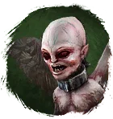
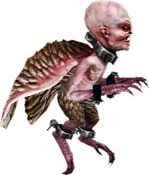

Открыть в интерактивной вики →

| Уровень | 65 |
|---|---|
| Прокачка | нет |
| Ранг в стае | 5 |
| Здоровье | 2200 |
| Мана | 1000 |
| Выносливость | 1200 |
| Статистика | Уровень: 65, ранг: 5, здоровье: 2200, мана: 1000, выносливость: 1200 |
Цена
15  Империал
Империал
ИмпериалГде взять
Покупается у Работорговца  Работорговец
Работорговец
РаботорговецНавыки


Доп. информация
Требуемый уровень: 65
Цена: 40 империалов
Покупка: у Работорговца
Может получать опыт — НЕТ
Описание
 | Это милое летающее существо превращает противников в беспомощных кукол. Против его стрел и чар нет защиты — как и положено Амуру. Атакует физически, издалека и ментально. Использует: Затемняющая атака, Игла в глаз, Ядовитый плевок, Калечащий плевок, Твоя старуха, Аура холода. | |